Demonstrate NanoSat attitude control reaction wheels.
The model includes 3 orthogonal reaction wheels. The satellite is intialized into an ISS orbit. The control law keeps the satellite aligned with LVLH. Power, thermal and link are simulated.
See also: CubeSatFaces, InertiaCubeSat, LatLonToR, DataRateOrbit, PID3Axis, PIDMIMO, QForm, BDipole, QLVLH, RK4, RHSCubeSat, TimeDisplay, GroundTrack, Plot2D, Figui -------------------------------------------------------------------------
Contents
%------------------------------------------------------------------------ % Copyright (c) 2020 Princeton Satellite Systems, Inc. % All rights reserved. %------------------------------------------------------------------------ % Since version 2020.1 %------------------------------------------------------------------------ % In case these were already used in the workspace clear g; clear u; clear p; clear d;
Constants
radToDeg = 180/pi; densitySilicon = 2600; densityAl = 2700; % Aluminum densityTungsten = 19300; % For the RWA disk
Simulation parameters
days = 0.2; tEnd = days*86400; dT = 1; nSim = ceil(tEnd/dT);
NanoSat model
Initialize the data structure
d = RHSCubeSat; % CubeSats are 1 kg per U model = '3U'; [area,nFace,rFace] = CubeSatFaces( model, 1 ); d.mass = 3; % kg d.inertia = InertiaCubeSat( model, d.mass ); linkPower = 1; % W rGS = LatLonToR(33.9191667/radToDeg,-118.4155556/radToDeg); dLink = DataRateOrbit; % Model data for our 3U satellite d.surfData.area = area; d.surfData.nFace = nFace; d.surfData.rFace = rFace; d.surfData.att.type = 'eci'; % Reaction wheel design d.kWheels = 14:16; % indices of wheel states in the state vector % From the manufacturer d.inertiaRWA = 2e-05; % Polar inertia kg-m^2 % Add power system model. Model as a list of areas and normals in the % body frame d.power.solarCellNormal = [1 1 -1 -1 0 0 0 0;... 0 0 0 0 1 1 -1 -1;... 0 0 0 0 0 0 0 0]; d.power.solarCellEff = 0.295; d.power.effPowerConversion = 0.9; d.power.solarCellArea = 0.1*0.116*ones(1,8); d.power.consumption = 4; d.power.batteryCapacity = 36000; DrawCubeSatSolarAreas(d.power)
ans =
Figure (PlotPSS) with properties:
Number: 1
Name: 'DrawCubeSatSolarAreas'
Color: [0.94 0.94 0.94]
Position: [468 345 560 420]
Units: 'pixels'
Use GET to show all properties
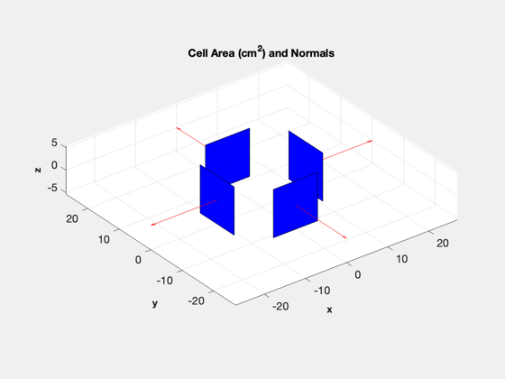 Initial state vector for an ISS orbit
x = d.x0; [el, jD0] = ISSOrbit; [r,v] = El2RV(el); x(1:3) = r; x(4:6) = v;
Start Julian date
d.jD0 = jD0;
Design the PID Controller
Specify the z body axis for alignment with the chosen ECI vector
p = PID3Axis; % inr, zeta, omega, tauInt, omegaR, tSamp % We set inr to 1 because our control will be angular acceleration % PID3Axis will multiply this to produce a torque [p.a, p.b, p.c, p.d] = PIDMIMO( 1, 1, 0.01, 200, 0.1, dT ); p.inertia = d.inertia; p.max_angle = 0.01; p.accel_sat = [100;100;100]; p.mode = 2; % Attitude quaternion mode p.q_target_last = x(7:10);
Atmosphere model data
d.atm = []; % Don't use J70
Initialize the plotting array to save time
qECIToBody = x(7:10); bField = QForm( qECIToBody, BDipole( x(1:3), d.jD0 ) ); xPlot = [[x;0;0;0;0;bField;0;0;0;0] zeros(length(x)+11,nSim)];
Initialize the time display
TimeDisplay( 'initialize', 'Nanosat Sim', nSim );
Run the simulation
t = 0; for k = 1:nSim % Display the status message TimeDisplay('update'); % Quaternion qECIToBody = x(7:10); % Julian date jD = d.jD0+t/86400; % Magnetic field - the magnetometer output is proportional to this bField = QForm( qECIToBody, BDipole( x(1:3), jD ) ); % Control system % LVLH is local vertical local horizontal and is a rotating frame with % +z pointing at the earth and +x in the velocity vector p.q_desired_state = QLVLH(x(1:3),x(4:6)); [torque, p] = PID3Axis( qECIToBody, p ); d.tRWA = -torque; % A time step with 4th order Runge-Kutta x = RK4( @RHSCubeSat, x, dT, t, d ); % Get the power [xDot, dist, power] = RHSCubeSat( x, t, d ); % Data Rate dR = DataRateOrbit( x(1:3), rGS, linkPower, jD, dLink ); % Update plotting and time hRWA = x(14:16)*d.inertiaRWA; xPlot(:,k+1) = [x;power;torque;bField;hRWA;dR]; t = t + dT; end TimeDisplay( 'close' ); % Data to display kP = 1:k+1; t = (0:k)*dT;
Graphics
GroundTrack( xPlot( 1: 3,:), t, d.jD0 );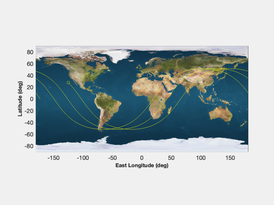
Plotting
[t, tL] = TimeLabl( t ); % Y-axis labels yL = [d.states(:)' {'Power (W)'} {'T_x (Nm)'} {'T_y (Nm)'} {'T_z (Nm)'}... {'B_x'} {'B_y'} {'B_z'}, {'H_x (Nms)'} {'H_y (Nms)'} {'H_z (Nms)'}... {'Data Rate (bps)'}]; Plot2D( t, xPlot( 1: 3,kP), tL, yL( 1: 3), 'Nanosat Orbit' ); Plot2D( t, xPlot( 7:10,kP), tL, yL( 7:10), 'Nanosat ECI To Body Quaternion' ); Plot2D( t, xPlot(11:13,kP), tL, yL( 11:13), 'Nanosat Attitude Rate (rad/s)' ); Plot2D( t, xPlot(14:16,kP), tL, yL( 14:16), 'Nanosat Reaction Wheel Rate (rad/s)' ); Plot2D( t, [xPlot(17,kP)/3600;xPlot(18,kP)], tL, yL( 17:18), 'Nanosat Power' ); Plot2D( t, xPlot(19:21,kP), tL, yL( 19:21), 'Nanosat Control Torque' ); Plot2D( t, xPlot(22:24,kP), tL, yL( 22:24), 'Nanosat Magnetic Field' ); Plot2D( t, xPlot(25:27,kP), tL, yL( 25:27), 'Nanosat RWA Momentum' ); Plot2D( t, xPlot(28,kP), tL, yL{28}, 'Nanosat Link' ); % This creates a plot navigation window Figui; %-------------------------------------- % $Id: 9cac640d463bc8a38de4724ae950663c55156d1d $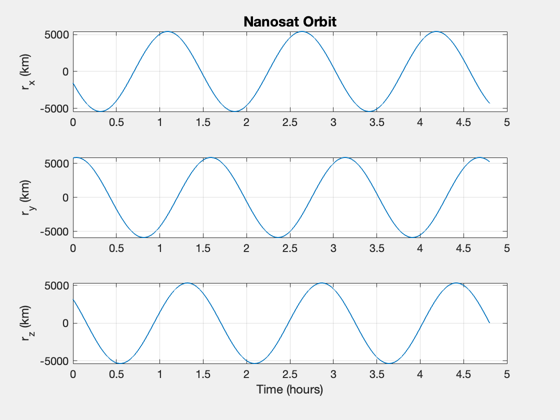 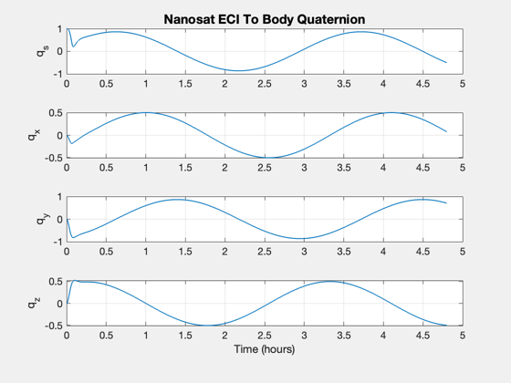 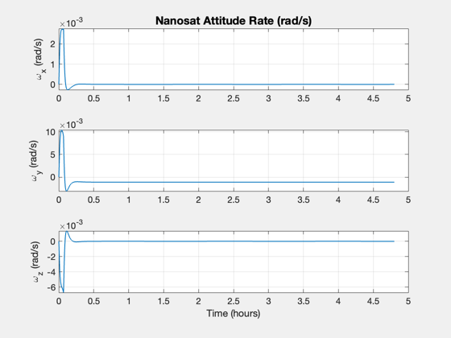 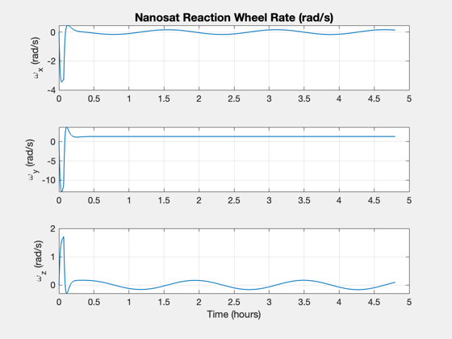 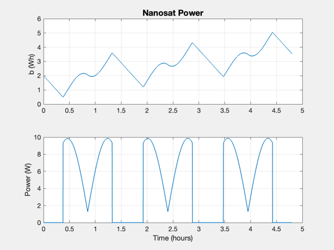 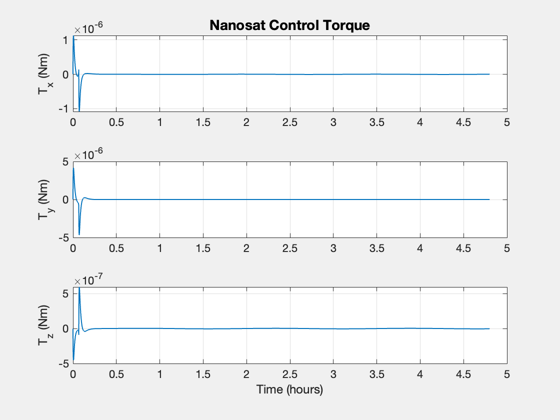 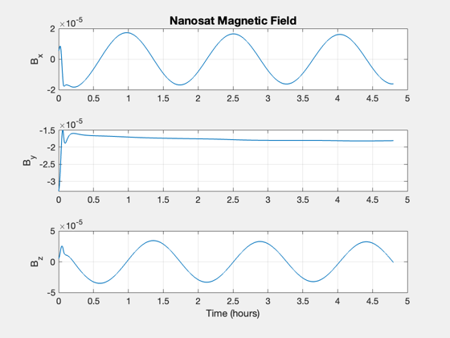 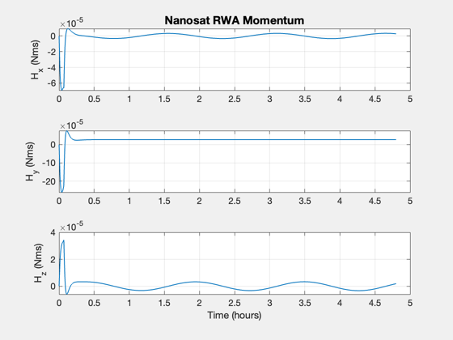 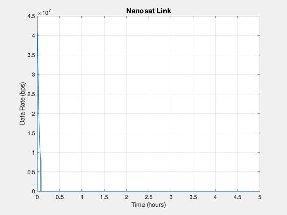 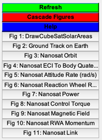